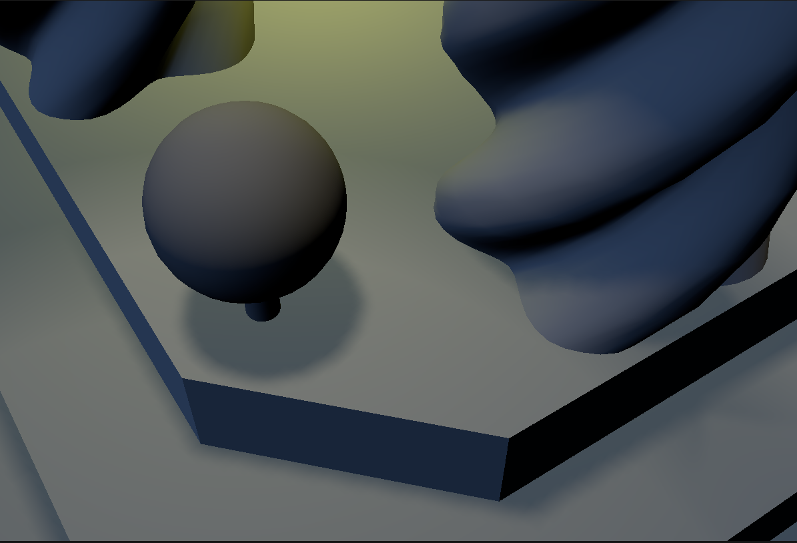
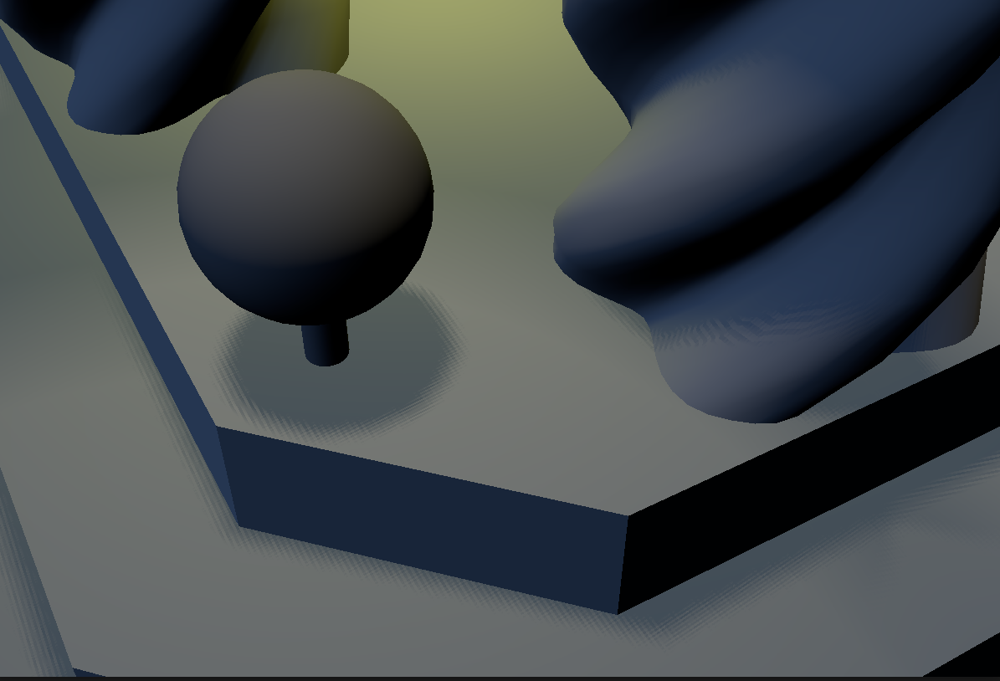

light-test.s72Left: My viewer render. Right: Blender viewport rendering.
For implementing lights, I decided to pass the information of each type of light as storage buffers to the shaders with minimal processing on the CPU, and did most of the work in the shader. I generated shadow maps for spot lights by running depth-only render passes from the perspective of each light, which created depth maps that I can then pass to the main render pass to sample when rendering shadows.
For now I'll skip the creative task, but I'll probably come back and get it done later.
Describe the scene you lit, the light count and placement approach, and include a screen recording showing it running in real-time:
Credit + cite your sources for textures and models, if you did not create them yourself.
There has been no changes from A2 for command-line arguments
--scene scene.s72 scene.s72
--camera camera_name camera_name.
Starts with the first scene camera loaded in code (or the user camera if there are no scene cameras) by default.
--exposure value value. 0.0 by default.
--tone-map linear|aces linear by default.
--culling none|frustum none by default.
--physical-device device_name --drawing-size w h --headless AVAILABLE dt frame.ppm steps the viewer by given dt and renders one frame.
If frame.ppm is provided, the viewer also saves the rendered frame to frame.ppm.
--timer file file.
At a high level, data from "LIGHT"s stored in an s72 file are mostly passed directly to
the in-memory representation used by the renderer, though the power and tint attributes were premultiplied.
Information like light position and/or direction were also computed during node traversal and passed to the shader.
The light data are stored in CPU-side objects that are first created on viewer construction within the scope
labelled // light information within SceneViewer::precompute_scene, and their
information is updated every frame within SceneViewer::traverse_scene_graph that is called within
SceneViewer::update. The light data is then copied into their corresponding descriptor sets
every frame within SceneViewer::render
Within objects.frag, light information is received as a single descriptor set containing 3 storage buffers for
sun, spot, and sphere lights respectively. Each light type has a different structure that stores their relevant information,
and the shader loops through every light of each type to compute the contribution of that light to the final color of the pixel.
light-test.s72lights-Parameters.s72
My viewer renders shadow maps by creating a depth-only render pass for each shadow-casting spot light. The render pass renders scene geometry from the perspective of the light and a depth map is automatically generated as part of the graphics pipeline. A pipeline barrier is added between the last shadow map render pass and the main render pass to ensure that the shadow maps are fully rendered before they are sampled in the main pass.
The generated shadow maps are passed to the object fragment shader as a fixed size array of combined image samplers, bound to their descriptor set during the main render pass. We can do this since we know the total number of shadow-casting lights after construction of the scene.
To avoid shadow map artifacts, I initially did front face culling, but while it worked in removing shadow acne, it caused significant light leaking. I thus switched to using back face culling and added a normal dependent bias in the vertex shader generating shadow maps. The bias is just a hardcoded constant (though I scaled the value depending on the shadow map resolution) that determines how much to nudge each vertex inwards along its normal.
I tried both the 16-sample PCF and 4-sample dithered PCF as detailed in GPU Gems. However I'm unsure if it's because I didn't implement the dithered approach properly, or if it's simply what it looks like at low resolution, but I don't like how the dithering creates band like artifacts at certain light angles, thus I decided to stick with the 16-sample PCF.


lights-Mix.s72.lights-Spot-Shadows.s72. The cameras loop through sizes 512, 256, 32, 64, and 128, in that order.lights-Spot-Shadows.s72, which contains 5 shadow maps of sizes 32, 64, 128, 256, and 512. The above numbers were collected on a
Framework 12 laptop using a 13th Gen Intel Core i5-1334U processor with 48GB single-channel RAM. (2.4082-2.3423)/1301 * 1024 ≈ 0.052 ms.(2.3423-1.3579)/5 ≈ 0.197 ms.Cover, at least: your chosen method for sorting lights to meshes.
Build a scene in which your light sorting technique provides a performance improvement over rendering all meshes with all lights. Include a screen shot (and the scene itself).
Include data demonstrating the performance improvement in rendering this scene. E.g., a graph of the frame times for an animated fly-through of the scene with and without your sorting code enabled.
Cover, at least: your implementation of PCSS (sampling pattern, counts)
Include images showing the same shadows rendered with and without PCSS, showing the spreading behavior as the shadow stretches further from the light.
Cover, at least: your choice of shadow map cascade levels and layout; how your cascade is packed into a texture; how [if at all] your cascade avoids "boiling" as the camera moves
Include images showing a scene rendered with a shadow-casting distant directional light. Include images with a modified shader color-coding pixels by what cascade level they are sampling. Include images from a debug camera, showing how the shadow map cascade fits the camera frustum.
Cover, at least: how you chose to set up cameras for cube map rendering
Include images or video showing a scene rendered with a shadow-casting sphere light. Show that there are no artifacts at the edges or corners of the shadow map cube.
If you have received instructor permission to pursue another extra credit activity, include information about that activity here.
Include images or video showing a scene rendered with a shadow-casting sphere light. Show that there are no artifacts at the edges or corners of the shadow map cube.